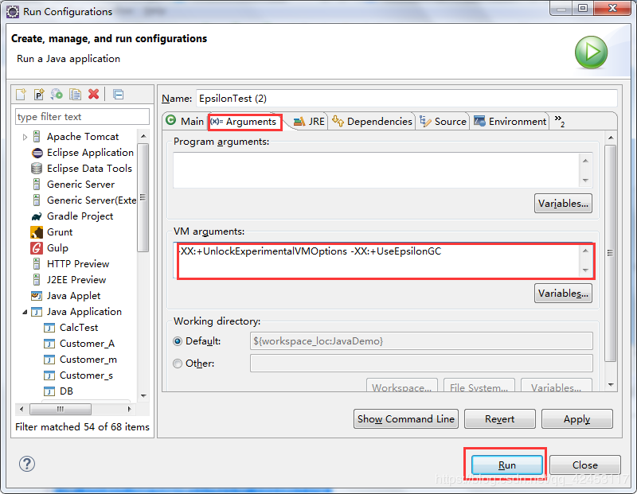

在去年的9月26日，Oracle官方宣布Java11正式发布，这是Java大版本周期变化后的第一个长期支持版本，非常值得关注。Java9和Java10都在很短的时间内就过渡了，所以，Java11将是一个不可忽视的版本。从时间节点看，JDK11的发布正好处在JDK8免费更新到期的前夕，同时，JDK8、9也将陆续成为"历史版本"。
那么，关于Java11的新特性到底有哪些呢？容我一一介绍。
什么是局部类型推断？
var str = "helloworld";
System.out.println(str);局部变量类型推断就是左边的类型直接使用var定义，而不用写具体的类型，编译器能根据右边的表达式自动推断类型，如上面的str变量使用var定义，编译器就能通过右边的"helloworld"自动推断出这是一个String类型的变量。
但是，值得注意的是，这个var并不是一个关键字，很多同学看到变量都能使用var来定义，那var还不是关键字吗？事实上，它真的不是一个关键字。
int var = 10;
System.out.println(var);例如上面的这段代码是能够正确运行的，这证明var不是关键字。
我们还可以通过反编译来看，例如我们反编译这样一段代码：
var a = 100;
System.out.println(a);反编译得到的结果为：
byte a = 100;
System.out.println(a);从这里可以看出，var仅仅是一个语法上的改进，在编译时期便已经将var转换为了对应的变量类型。
然而在使用var定义变量时，必须立刻赋值，例如下面的情况是错误的：
var a;因为在不赋值的情况下，JVM无法推断当前变量的类型。
在类中的成员变量(也叫属性)不可以使用var来定义，例如下面的情况是错误的：
class Student{
var name = "小明";
var age = 20;
}var的好处在lambda表达式中体现得淋漓尽致。我们知道，开启一个线程可以使用lambda表达式来完成：
Thread t = new Thread(() -> System.out.println(Thread.currentThread().getName()));
t.start();这是一个无参的lambda表达式形式，我们再看一个带参lambda表达式：
String[] arr = { "program", "creek", "is", "a", "java", "site" };
Stream<String> stream = Stream.of(arr);
stream.forEach(x -> System.out.print(x + "\t"));这是一个forEach的用法，其中需要用到变量x，因为这里它自动推断出了x的类型为String，所以String被省略了，那么加上var之后代码变成这样：
String[] arr = { "program", "creek", "is", "a", "java", "site" };
Stream<String> stream = Stream.of(arr);
stream.forEach((var x) -> System.out.print(x + "\t"));如果仅仅只是这样写，倒是无法看出写var有什么优势，反而觉得有点多此一举，但是如果要给lambda表达式变量标注注解的话，那么这个时候var的作用就体现出来了。
String[] arr = { "program", "creek", "is", "a", "java", "site" };
Stream<String> stream = Stream.of(arr);
stream.forEach((@Nonnull var x) -> System.out.print(x + "\t"));那么var的优势何在呢？因为你要标注注解的话，就必定要写出x的类型，如下面这段程序是错误的：
String[] arr = { "program", "creek", "is", "a", "java", "site" };
Stream<String> stream = Stream.of(arr);
stream.forEach((@Nonnull x) -> System.out.print(x + "\t"));但是，我们从何得知x的类型呢？其实我们不用知晓，因为var就能自动推断，所以，var的好处在这里就体现出来了。
在Java9之前，我们要想创建新集合，我们得这样做：
List<String> list = new ArrayList<String>();
list.add("hello");
list.add("world");
list.add("java");创建过程略显麻烦，那么现在，我们可以通过这样的方式来创建集合：
List<String> list = List.of("hello","world","java");但是，请注意了，用这样的方式来创建的集合，是无法添加元素的，我们可以尝试着添加一下：
List<String> list = List.of("hello","world","java");
list.add("test");运行结果如下：
Exception in thread "main" java.lang.UnsupportedOperationException
at java.base/java.util.ImmutableCollections.uoe(ImmutableCollections.java:71)
at java.base/java.util.ImmutableCollections$AbstractImmutableCollection.add(ImmutableCollections.java:75)
at com.itcast.TestDemo.main(TestDemo.java:8)那么这到底是为什么呢？我们通过源码来分析一下。
首先我么看看List类的of()方法：
static <E> List<E> of(E e1, E e2, E e3) {
return new ImmutableCollections.ListN<>(e1, e2, e3);
}该方法调用了ImmutableCollections类的ListN()生成一个集合并返回，我们看看ListN的源码：
static final class ListN<E> extends AbstractImmutableList<E>
implements Serializable {
static final List<?> EMPTY_LIST = new ListN<>();
@Stable
private final E[] elements;
@SafeVarargs
ListN(E... input) {
// copy and check manually to avoid TOCTOU
@SuppressWarnings("unchecked")
E[] tmp = (E[])new Object[input.length]; // implicit nullcheck of input
for (int i = 0; i < input.length; i++) {
tmp[i] = Objects.requireNonNull(input[i]);
}
elements = tmp;
}
@Override
public boolean isEmpty() {
return size() == 0;
}
@Override
public int size() {
return elements.length;
}
@Override
public E get(int index) {
return elements[index];
}
private void readObject(ObjectInputStream in) throws IOException, ClassNotFoundException {
throw new InvalidObjectException("not serial proxy");
}
private Object writeReplace() {
return new CollSer(CollSer.IMM_LIST, elements);
}
}它是ImmutableCollections类的一个静态内部类，我们暂且不管它是如何生成集合的，我们找找里面有没有add()方法，会发现里面并不存在add()方法，那么我们既然能够调用到，那么add()方法肯定在其父类中。最终，在它的父类AbstractImmutableCollection中找到了add()方法：
// all mutating methods throw UnsupportedOperationException
@Override public boolean add(E e) { throw uoe(); }
@Override public boolean addAll(Collection<? extends E> c) { throw uoe(); }
@Override public void clear() { throw uoe(); }
@Override public boolean remove(Object o) { throw uoe(); }
@Override public boolean removeAll(Collection<?> c) { throw uoe(); }
@Override public boolean removeIf(Predicate<? super E> filter) { throw uoe(); }
@Override public boolean retainAll(Collection<?> c) { throw uoe(); }add()方法调用了uoe()方法，而uoe()方法直接抛出了一个异常：
static UnsupportedOperationException uoe() { return new UnsupportedOperationException(); }会发现，调用uoe()方法的不只add()方法一个，有关于集合添加、修改、删除的种种操作都会抛出异常。所以，由of()方法创建的集合是不可以进行这些相关操作的。
上面集合中说到的of()方法同样可以用在流中。
Stream<Integer> stream = Stream.of(1,2,3,4,5);Stream stream = Stream.of();
Stream stream2 = Stream.of(null);而在上面的两条语句中，第二条语句会产生空指针异常，当然，我们不能允许我们的程序出现这样的异常，但是你又很有可能会传入一个null，这样的情况该如何避免呢？从Java9开始，出现了一个新方法：
Stream stream3 = Stream.ofNullable(null);该方法允许你传入一个null值，以此避免空指针异常产生。
继续介绍Stream中的新API。
Stream<Integer> stream = Stream.of(1, 3, 2, 5, 6, 7);
Stream stream2 = stream.takeWhile(t -> t % 2 != 0);
stream2.forEach(System.out::println);这段程序的运行结果：
1
3你若是理解了这个方法的意思，这样的输出结果就不难理解。因为当获取到元素2时，判定器为假，此时会终止处理，所以后面的元素就不会再去处理。
2.dropWhile()
那么这方法和takeWhile()方法相反，它会从流中一直丢弃判定器为真的元素，一旦遇到元素为假，就终止处理
Stream<Integer> stream = Stream.of(1, 3, 2, 5, 6, 7);
Stream stream2 = stream.dropWhile(t -> t % 2 != 0);
stream2.forEach(System.out::println);所以上面程序段的执行结果为：
2
5
6
71.isBlank()
判断字符串中的字符是否都为空白
2.strip()
去除字符串首尾的空白
3.stripTrailing()
去除字符串尾部的空白
4.stripLeading()
去除字符串首部的空白
5.repeat()
复制字符串，可以传入一个int类型值来控制复制次数
我们知道在字符串处理方法中，trim()方法也能够去除字符串首尾的空白，那为什么Oracle还要设计一个重复的方法呢？这必然有它的道理。其实，trim()方法要比strip()方法简单得多：
/**
* Returns a string whose value is this string, with all leading
* and trailing space removed, where space is defined
* as any character whose codepoint is less than or equal to
* {@code 'U+0020'} (the space character).
*/
public String trim() {
String ret = isLatin1() ? StringLatin1.trim(value)
: StringUTF16.trim(value);
return ret == null ? this : ret;
}通过查阅源码中对该方法的注释发现，trim()方法只能去除Unicode码值小于等于32的空白字符，而32正好指的是空格，那么对于全角的空格，trim()方法就无能为力了。所以在功能上，strip()方法更加强大。
这是Java9开始引入的一个处理HTTP请求的API，该API支持同步和异步，而在Java11中已经为正式可用状态。
HttpClient client = HttpClient.newHttpClient();
HttpRequest request = HttpRequest.newBuilder(URI.create("http://www.baidu.com")).build();
BodyHandler<String> responseBodyHandler = BodyHandlers.ofString();
HttpResponse<String> response = client.send(request, responseBodyHandler);
String body = response.body();
System.out.println(body);这是一段基本的访问百度的请求代码，当然，它还提供了异步请求方式：
HttpClient client = HttpClient.newHttpClient();
HttpRequest request = HttpRequest.newBuilder(URI.create("http://www.baidu.com")).build();
BodyHandler<String> responseBodyHandler = BodyHandlers.ofString();
CompletableFuture<HttpResponse<String>> sendAsync = client.sendAsync(request, responseBodyHandler);
HttpResponse<String> response = sendAsync.get();
String body = response.body();
System.out.println(body);JDK上对这个特性的描述是：开发一个处理内存分配但不实现任何实际内存回收机制的GC，一旦可用堆内存用完，JVM就会退出。
我们可以来尝试着使用一下它，首先我们编写一段程序：
public class EpsilonTest {
public static void main(String[] args) throws Exception {
var list = new ArrayList<>();
boolean flag = true;
int count = 0;
while (flag) {
list.add(new Garbage());
if (count++ == 500) {
list.clear();
}
}
}
}
class Garbage {
private double d1 = 1;
private double d2 = 2;
/**
* GC在清除本对象时会调用该方法
*/
@Override
protected void finalize() throws Throwable {
System.out.println(this + " collecting");
}
}这是一个无限循环的程序，循环体不断创建Garbage对象并放入集合，当循环次数达到500时将集合清空，此时的500个对象均为垃圾，会被GC清理，清理时调用finalize()方法打印信息。运行这段程序，结果如下：
...
com.itcast.Garbage@1e9c634c collecting
java.lang.OutOfMemoryError: Java heap space
at com.itcast.EpsilonTest.main(EpsilonTest.java:11)
com.itcast.Garbage@1174213e collecting
com.itcast.Garbage@2029a4b8 collecting
...当程序执行到某一刻时，内存溢出，程序终止。
现在我们来使用一下Epsilon，右键选择类文件，在Run As右侧选择Run Configurations：

现在我们将默认的GC换为了Epsilon，再来看看运行结果：
Terminating due to java.lang.OutOfMemoryError: Java heap space会发现，控制台只输出了这么一句，说明被清除的集合中的对象并没有被回收，而且内存溢出的速度也非常快，这说明该GC是并不会回收垃圾，那么它有什么作用呢？
它提供完全被动的GC实现，具有有限的分配限制和尽可能低的延迟开销，但代价是内存占用和内存吞吐量，它的主要用途有以下几个方面：
有人说这是JDK11最为瞩目的特性，没有之一，是最重磅的升级，那么ZGC的优势在哪里呢？
ZGC是一个并发、基于region、压缩型的垃圾收集器，只有root扫描阶段会STW(strop the world，停止所有线程)，因此ZGC的停顿时间不会随着堆的增长和存活对象的增长而变长。
用法：-XX:UnlockExperimentalVMOptions -XX:+UseZGC
虽然功能如此强大，但很遗憾的是，在Windows系统的JDK中并没有提供ZGC，所以也就没有办法尝鲜了。
这是一个记录仪，用于诊断程序运行过程，那么在之前这是一个商业版的特性，是要收费的，从Java11开始，Fight Recorder免费提供使用并开源。它可以导出事件到文件中，之后可以用Java Mission Control来分析，也可以在应用启动时配置java -XX:StartFlightRecording或者在应用启动之后使用jcmd来录制，比如：
$ jcmd <pid> JFR.start
$ jcmd <pid> JFR.dump filename=
$ jcmd <pid> JFR.stop在Java11中，支持一个命令编译运行文件，在之前的版本中，我们要想运行一个Java程序，首先得用javac指令编译，然后用java指令运行。而在新版本中，我们直接使用java指令即可完成编译运行操作。
在Unicode10版本中，增加了8518个字符，总计达到了136690个字符，这已经超出了char类型的数值范围，所以在Java11中，新增了CharacterData，使用四个字节来处理字符。
那么有关Java11的新特性就介绍到这里。